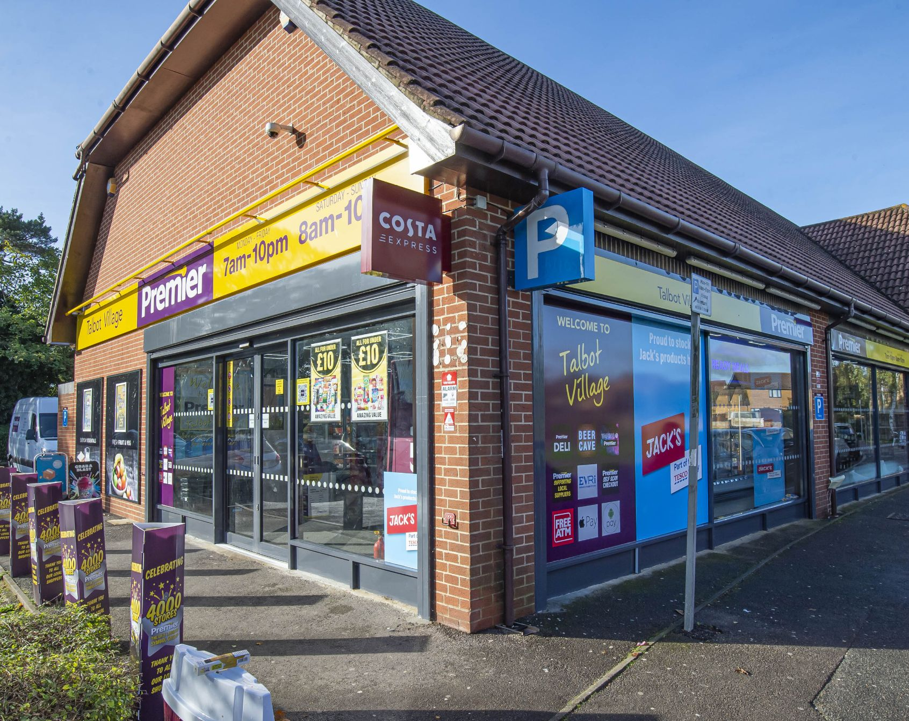

Get in touch
Whilst we value the views and feedback from our shoppers, kindly note that all Premier stores are independently owned and operated.
If you have feedback regarding your local Premier store, please contact them directly in the first instance.

Find your Premier
Contact Premier Form
Alternatively you may contact us below:
Write to us:
Premier Stores
Equity House
Irthlingborough Road
Wellingborough
Northants NN8 1LT